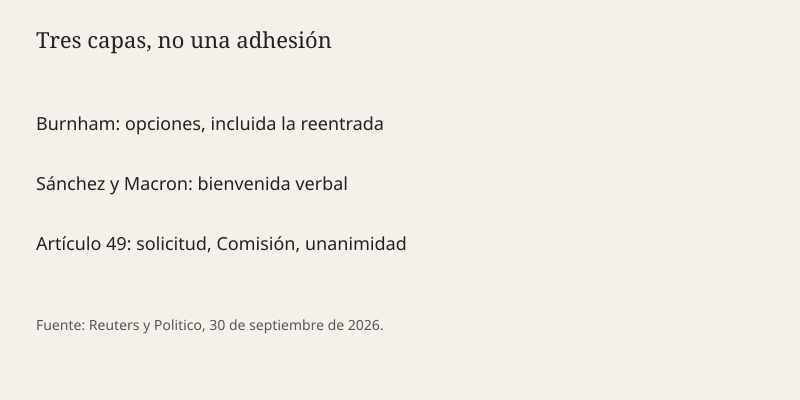

Madrid · Unión Europea · 1 de octubre de 2026
Sánchez y Macron dicen que recibirían al Reino Unido si pidiera volver a la Unión Europea

Lo que coinciden las mesas
Reuters informó el 30 de septiembre de 2026 de que el presidente del Gobierno, Pedro Sánchez, y el presidente francés, Emmanuel Macron, expresaron en Madrid su disposición a que el Reino Unido vuelva a la Unión Europea. La ocasión fue la rueda de prensa conjunta al cierre de la primera visita de Estado de Macron a España. Macron calificó de “excelente noticia” y de “buena decisión” la posibilidad, planteada horas antes por el primer ministro británico Andy Burnham, de reabrir el camino de adhesión. Sánchez dijo que abrirían los brazos. Politico recogió fórmulas equivalentes: Macron habló de “welcome back” y Sánchez de recibir la vuelta “with open arms”.
Los dos gobiernos también dijeron que Europa debe reforzar sus defensas comerciales frente a China. Esa segunda frase es un acuerdo anunciado de orientación, no un reglamento publicado ese día. Politico añadió que la reacción en Bruselas fue más contenida que la de Madrid y París. No hay, en estas piezas, una carta del Consejo Europeo que abra negociaciones del artículo 49.
Lo que es solo una cita
Burnham dijo, según Politico, que el Brexit había hecho más daño que beneficio y que expondría opciones en una cumbre Reino Unido–UE prevista en noviembre. Esas opciones incluían el mercado único, la unión aduanera o volver “hasta el final” a la Unión. Decir que las opciones existen no es presentar la solicitud. Macron llamó a Burnham audaz y a la vuelta una decisión sabia. Es un juicio político sobre una hipótesis.
Sánchez describió a Francia y España como líderes de la “resistencia a los enemigos de nuestro continente y del modelo europeo”. La frase no identifica un Estado ni un partido. Funciona como marco de la visita, no como hecho verificable de alineamiento militar o comercial.
Mecanismo
El Reino Unido salió de la Unión Europea el 31 de enero de 2020 y del mercado único y la unión aduanera al acabar el periodo transitorio, el 31 de diciembre de 2020. Volver no es un gesto bilateral de Madrid y París. El artículo 49 del Tratado de la Unión Europea exige una solicitud del Estado candidato, un dictamen de la Comisión, una decisión unánime del Consejo y la aprobación del Parlamento Europeo. Cada miembro puede vetar. España y Francia pueden animar; no pueden inscribir solas a un antiguo miembro.
Además, el candidato tendría que aceptar el acervo, la jurisdicción del Tribunal de Justicia en las materias transferidas, y una contribución presupuestaria. El rebate británico y la excepción del euro no se heredan de forma automática. Cualquier excepción se negocia y la unanimidad la hace frágil. Por eso la frase “abrir los brazos” describe una bienvenida, no un calendario de capítulos.
La visita de Estado es el otro hecho. Una primera visita de Estado francesa a España en este periodo produce comunicados, condecoraciones y una rueda de prensa. El comercio con China entra en esa lista porque ambos gobiernos quieren instrumentos de defensa comercial —aranceles, control de subvenciones, contratación pública— sin haber publicado el 30 de septiembre un texto conjunto con artículos numerados. El lector puede anotar la coincidencia de mensaje y esperar el documento.
Para la política española el encaje es interno. Sánchez habla de Europa a meses de un ciclo electoral en el que Reuters recuerda que se espera avance de la derecha radical en varios países, con elecciones el año que viene en Francia y en otros socios. Esa expectativa es un pronóstico de Reuters, no un resultado. No cambia el tratado.
Lo que la noticia no es
No es el reingreso del Reino Unido. No es un referéndum británico convocado. No es un acuerdo de aduana firmado en La Moncloa. No es la posición oficial de la Comisión Europea. La utilidad de la pieza está en separar tres capas: lo que Burnham puso sobre la mesa, lo que dos capitales contestaron, y lo que el tratado exigiría si la mesa se convirtiera en solicitud.

Artículos fuente y puntuaciones
| Medio | Titular | T | N | C |
|---|---|---|---|---|
| Reuters | Spain, France align on welcoming UK back to EU, strengthening China trade defences | 94 | 0 | 96 |
| Politico | Macron and Sanchez say UK would be ‘welcome’ back in EU | 90 | -6 | 88 |
| La Moncloa | Agenda del Gobierno, 1 de octubre de 2026 | 95 | 0 | 100 |